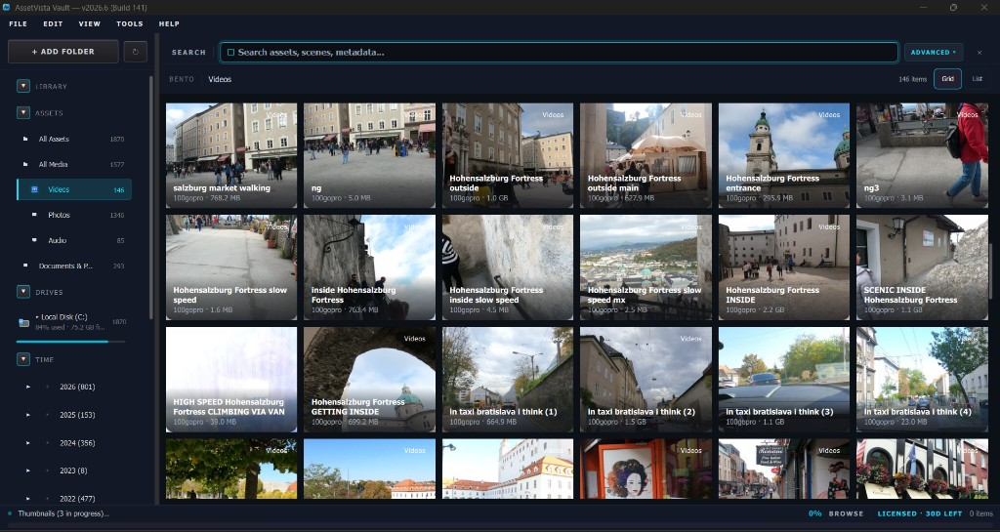
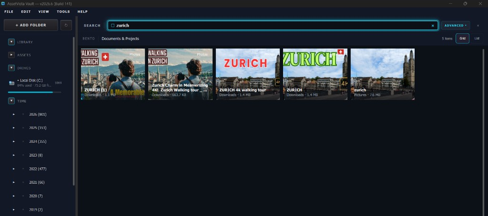
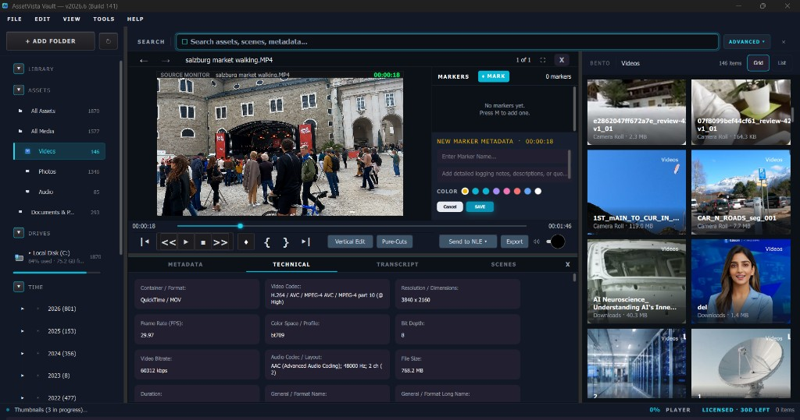
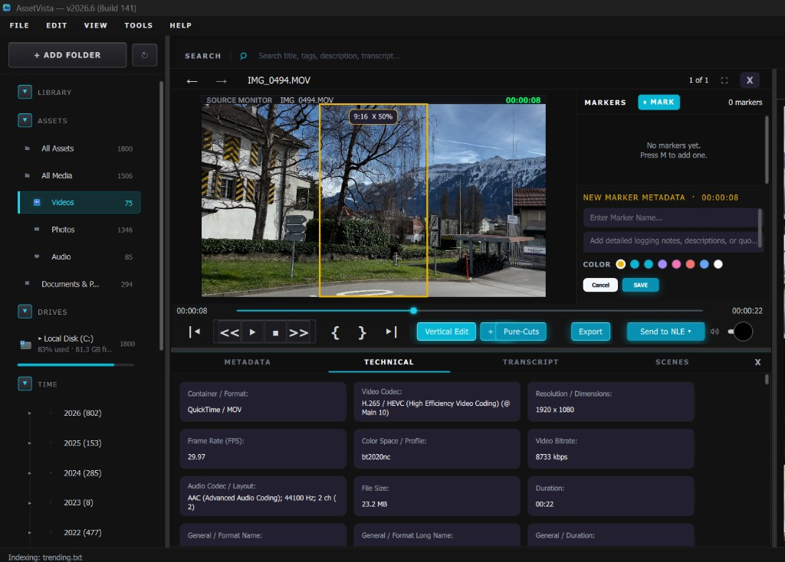
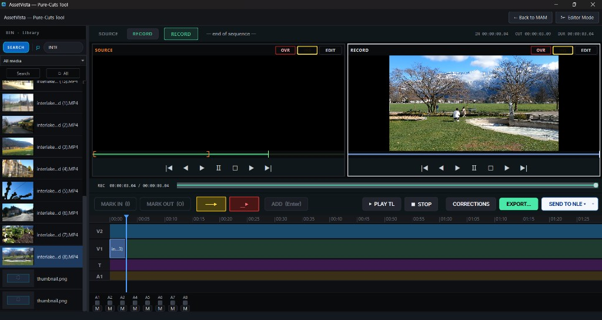
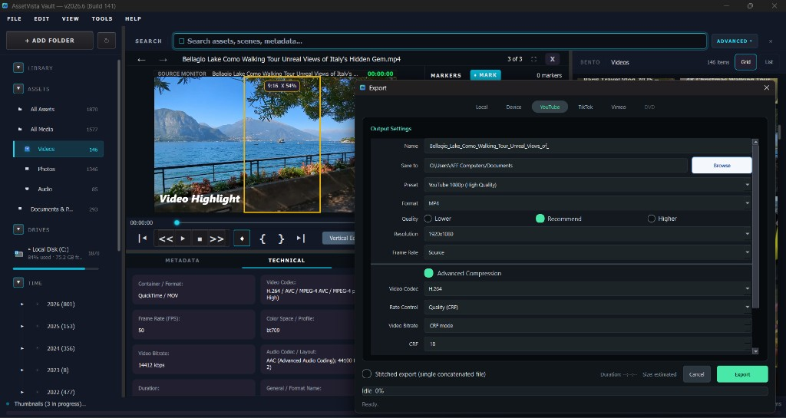
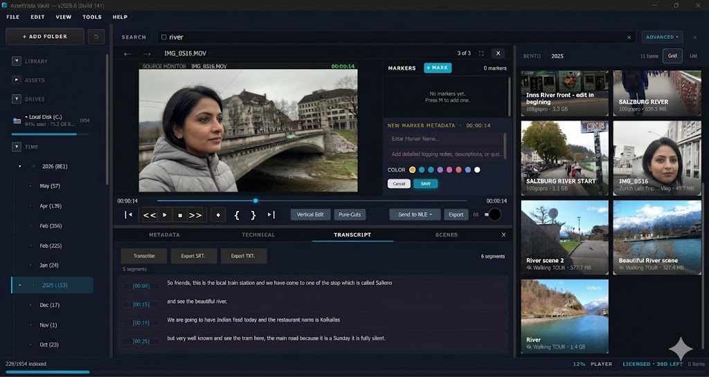

← Back to The Streamic
AssetVista Features
A standalone media and document intelligence workspace built for creators.
🗂 Media Library
Organize video, audio, images, and documents in a single indexed library.
- Grid, list, and BENTO layouts
- Unified browsing across media and documents
- Smart grouping by type, time, and folders

🔍 Search & Indexing
Find assets instantly across your entire library.
- Search by filename, tags, and metadata
- Transcript-based search (Beta)
- Document text indexing (PDF, text)

🎬 Review & Player Workspace
Review footage with precise playback and annotations.
- Timecode playback + frame controls
- Markers with notes and color
- Scene detection and navigation

📱 Vertical Editing (USP)
Reframe horizontal video into vertical formats for modern platforms.
- 9:16 preview inside player
- Adjust framing interactively
- Prepare content for Shorts & Reels

✂️ Pure-Cuts Editor
Assemble rough edits without leaving your library.
- Source + record monitors
- Mark In / Out editing
- Multi-track timeline

📤 Export & Delivery
Export media with flexible settings and NLE integration.
- Format, resolution, bitrate control
- Preset-based export workflows
- Send to Premiere, FCP, Avid

📄 Document Indexing
Manage production documents alongside media.
- PDF and text indexing
- Searchable content
- Unified library view
